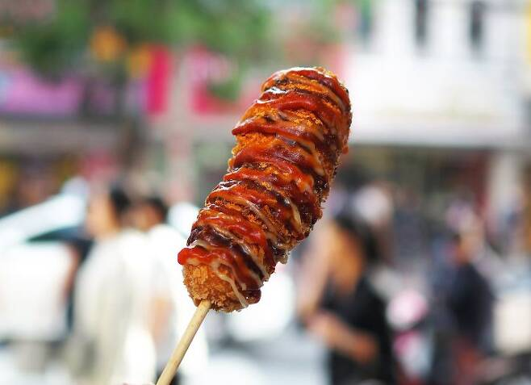
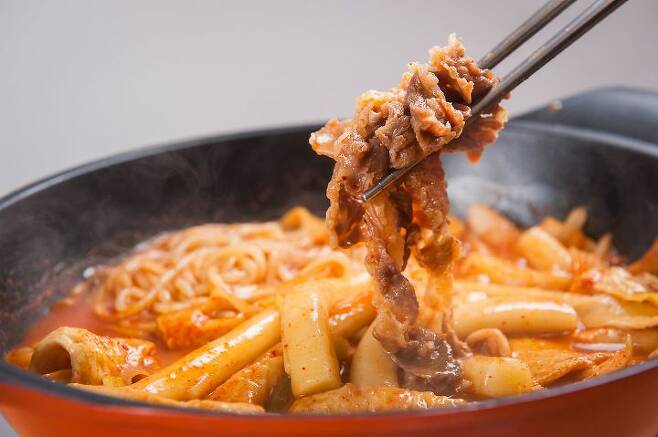
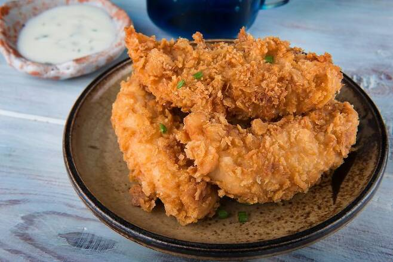
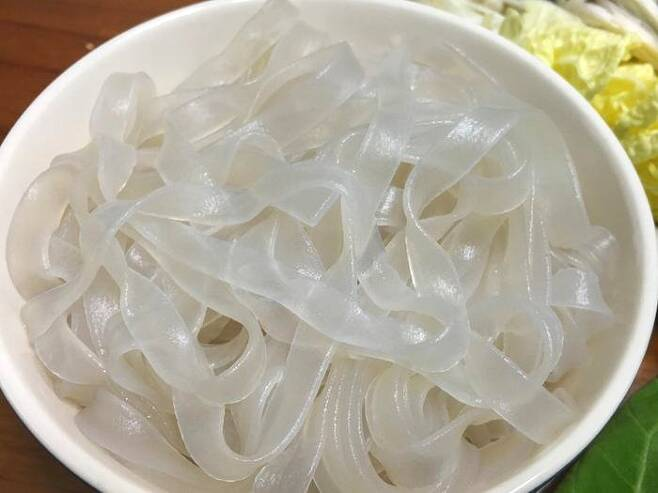
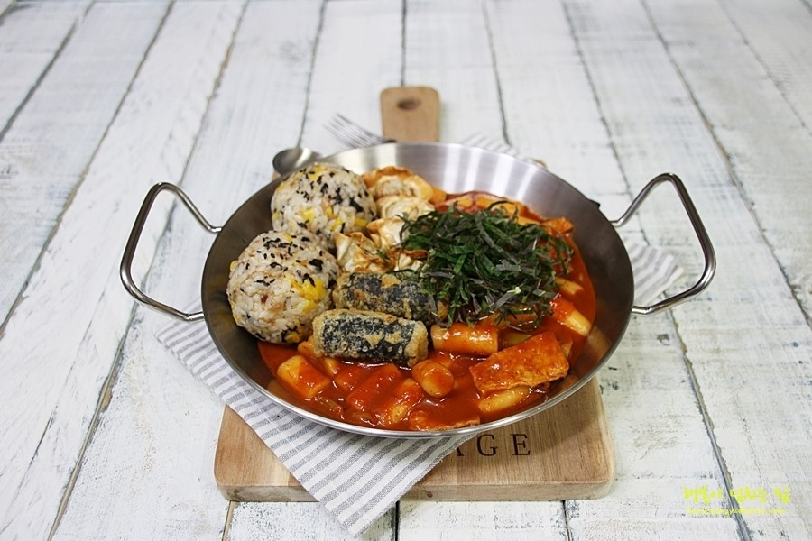

떡볶이란???
떡볶이 꿀조합 10가지!
핫도그

명량과 엽떡의 조합은 말할필요 없는 꿀조합 최근 인기를 끌고있는 명량의 로제 핫볶이가 그 열기를 더해주는 것 같다
개인적으로는 양이 많아지기 때문에 여러명이서 먹을 때 먹기를 추천!
차돌박이

차돌박이는 역시 소고기답게 부족한 떡볶이의 감칠맛을 올려준다! 인기 있는 "청년다방"이라는 떡볶이집에서도
이 메뉴가 메인! 달달한 떡볶이 보다는 매콤한 떡볶이의 토핑으로 올라가는 것이 더 매력적인게 특징이다
어묵과 떡과 차돌을 한입에 먹는다면 그것이야 말로 천국
치킨

최근에는 치킨과 떡볶이를 아예 같이 파는 집들을 심심찮게 볼수 있다. 떡볶이에 튀김은 국룰인데다, 바삭함과 감칠맛과 촉촉함을 같이
겸비한 치킨은 그야말로 찰떡, 든든한 메뉴로 돼지 파티를 할때 치킨과 떡복이만 있다면 이미 그것으로 칼로리 폭탄일 것
중국당면

사실상 꿀조합이 이라고 말하기에도 민망한 중국당면은 마타랑의 급 부상과함께 점점 스테디 셀러로 자리잡고 있다.
부들부들하고 말캉한데다, 입안에 꽉차는 부피감이 아주 일품이다. 잘 불려서 넣는 것이 핵심이니 두 시간 전에는
준비해야하는 불편함도 있지만, 그 맛은 확실히 그럴만한 가치가 있다
주먹밥

개인적으로는 가장 좋아하는 조합이다. 떡볶이 국물에 살짝 찍어먹거나 안의 토핑을 주먹밥에 올려먹으면
떡볶이가 음식이 아니라 군것질이라고 생각하는 사람에게도 만족스러울 것
김가루와 다른 소스들의 감칠맛에 매콤한 국물이 아주 잘 어울린다. 사실상 필수!
한편 요즘 핫한 라이스페이퍼 떡볶이도 있으니 궁금하다면
유튜브영상에서 확인할 수 있다!!
편의점 떡볶이와 브랜드 떡볶이